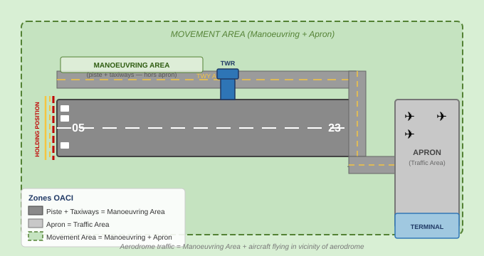
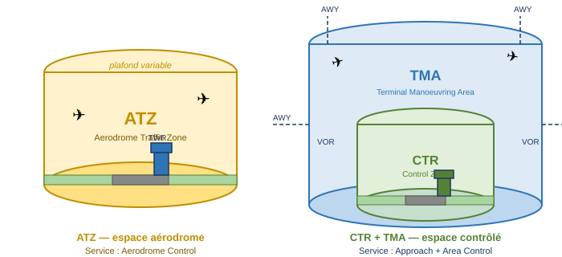
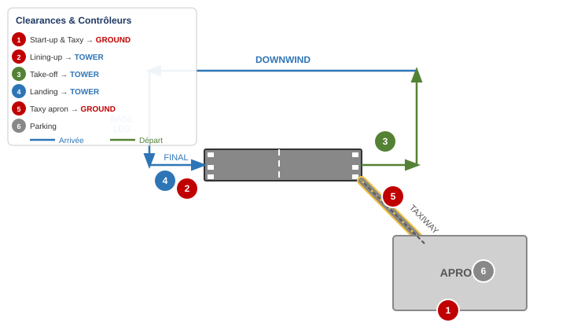
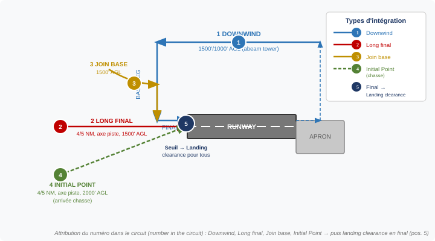
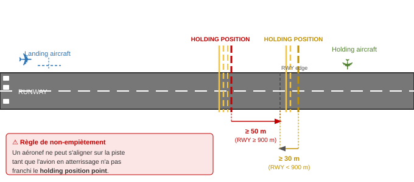
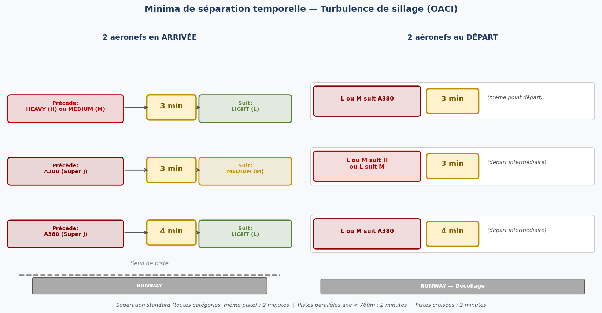
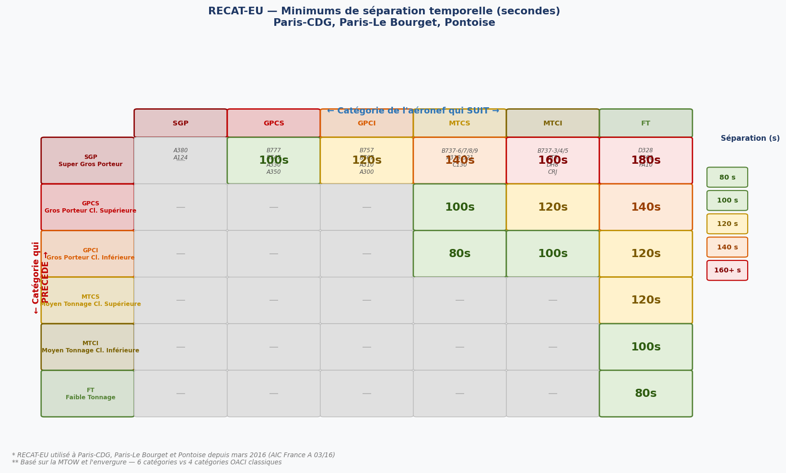

1. Définitions essentielles
Le service de contrôle d'aérodrome (aerodrome control service) s'applique à un ensemble précis de zones et de trafics dont la connaissance exacte est indispensable à l'examen ATPL.
1.1 Trafic d'aérodrome (Aerodrome traffic)
Le trafic d'aérodrome comprend deux composantes : tout le trafic circulant sur l'aire de manœuvre d'un aérodrome, et tous les aéronefs évoluant dans les environs de l'aérodrome (vicinity of an aerodrome). Cette définition est importante car elle détermine le périmètre de responsabilité de la tour.
"Vicinity" = aéronefs entrant ou quittant le circuit de circulation d'aérodrome.
1.2 Les zones de l'aérodrome
L'aérodrome est structuré en zones emboîtées qu'il faut distinguer rigoureusement, car elles déterminent les règles de séparation et les autorités compétentes.

L'aire de trafic (Apron ou Traffic Area) est la zone définie destinée à accueillir les aéronefs pour l'embarquement ou le débarquement de passagers, du courrier, du fret, ainsi que pour l'avitaillement, le stationnement ou la maintenance.
L'aire de manœuvre (manoeuvring area) désigne la partie de l'aérodrome utilisée pour les décollages, atterrissages et le roulage des aéronefs — à l'exclusion des aires de trafic. Elle comprend donc la piste (runway) et les voies de circulation (taxiways).
L'aire de mouvement (movement area) est l'union des deux : Apron + Manoeuvring area. C'est la totalité de la surface de l'aérodrome utilisée par les aéronefs.
1.3 ATZ et CTR
L'ATZ (Aerodrome Traffic Zone) est un espace aérien cylindrique entourant l'aérodrome, géré par la tour de contrôle. La CTR (Control Zone, zone de contrôle) est un espace aérien contrôlé s'étendant vers le bas jusqu'au sol autour d'un aérodrome à trafic IFR, s'inscrivant dans une TMA (Terminal Manoeuvring Area).

2. Fonctions du service de contrôle d'aérodrome
2.1 Les deux missions fondamentales
Le service de contrôle d'aérodrome a deux missions complémentaires :
- Assurer un écoulement sûr, ordonné et rapide du trafic (safe, orderly and expeditious flow of traffic)
- Prévenir les collisions entre aéronefs et entre aéronefs et obstacles
2.2 Prévention des collisions — quoi et où
La prévention active s'applique dans six situations précises :
- Entre aéronefs évoluant dans le circuit de trafic d'aérodrome
- Entre aéronefs manœuvrant sur l'aire de manœuvre (piste et taxiway)
- Entre aéronefs en atterrissage et au décollage
- Entre aéronefs et véhicules sur l'aire de manœuvre
- Entre aéronefs sur l'aire de manœuvre et les obstacles (obstructions) sur cette aire
2.3 Postes de travail (Working Positions)
La tour de contrôle d'aérodrome est organisée en plusieurs postes, chacun responsable d'une zone précise :
| Poste | Zone de responsabilité | Exemple d'indicatif |
|---|---|---|
| Tower Controller | Piste (runway) + circuit de trafic d'aérodrome | SALON TOWER |
| Ground Controller | Taxiways + aire de trafic (apron) Pas de prévention collision sur apron |
SALON GROUND |
| Clearance Delivery | Clairances de démarrage + clairances ATC pour vols IFR au départ | PROVENCE DELIVERY |
3. Clairances et circuit de trafic
3.1 Séquence des clairances
Un vol type depuis un aérodrome contrôlé reçoit ses clairances dans un ordre précis, attribuées par deux contrôleurs différents selon la phase :

La séquence complète est la suivante :
- Start-up & Taxy clearance avec la piste en service et les informations de départ → Ground controller
- Lining-up clearance (autorisation d'alignement) : mise en attente au point d'arrêt, transfert au Tower controller → Tower controller
- Take-off clearance (autorisation de décollage) → Tower controller
- Landing clearance (autorisation d'atterrissage) → Tower controller
- Taxy clearance to apron (vers l'aire de trafic, une fois la piste dégagée) → Ground controller
- Stationnement (parking)
3.2 Types d'intégration en circuit (Different Patterns)
Un aéronef peut intégrer le circuit d'aérodrome de différentes façons. Dans tous les cas sauf le Final, le contrôleur attribue un numéro dans le circuit (number in the circuit) :

| Intégration | Position | Altitude typique | Numéro attribué |
|---|---|---|---|
| Downwind | Vent arrière parallèle à la piste | 1500'/1000' AGL (abeam tower) | Oui |
| Long final (straight-in) | Finale étendue, dans l'axe piste | 4/5 NM, axe piste, 1500' AGL | Oui |
| Join base | Intégration directe en vent traversier | 1500' AGL | Oui |
| Initial Point | Point initial (arrivée chasse) | 4/5 NM, axe piste, 2000' AGL | Oui (chasse) |
| Final | En finale courte | — | Non → Landing clearance |
3.3 Sélection de la piste en service
En règle générale, les aéronefs décollent et atterrissent face au vent (into wind). Cependant, l'unité de contrôle peut tenir compte d'autres facteurs :
- Le circuit de trafic d'aérodrome (aerodrome traffic circuit)
- Les aides à l'approche et à l'atterrissage disponibles
- Les procédures de réduction du bruit (noise abatement purposes)
4. Séparation sur la piste et positions d'attente
4.1 Position d'attente (Holding Position)
Un aéronef ne peut s'aligner (line up) sur la piste tant qu'un autre aéronef est en train d'atterrir et n'a pas encore franchi le holding position point. La distance de la position d'attente au bord de la piste dépend de la longueur de piste :

4.2 Compte rendu "Runway Vacated"
Le compte rendu "runway vacated" (piste libérée) est fait lorsque l'aéronef en entier (entire aircraft) se trouve au-delà du holding position point pertinent. Ce n'est qu'à ce moment que la piste est considérée comme dégagée par le contrôleur.
4.3 Séparation standard sur la piste
Une clairance de décollage ou d'atterrissage peut être accordée dès lors que l'aéronef précédent a rempli l'une des trois conditions suivantes :
- A dégagé la piste (runway vacated)
- A survolé l'extrémité opposée de la piste (overflying the opposite runway end)
- A commencé un virage (beginning turn)
En présence de turbulence de sillage, une séparation minimale de 2 minutes s'applique dans les cas suivants :
- Même piste (same runway)
- Pistes parallèles dont les axes sont séparés de moins de 760 mètres
- Pistes croisées (crossing runways)
- Pistes parallèles séparées de 760 m ou plus, si les trajectoires de départ se croisent (if crossing departure tracks)
4.4 Priorité d'atterrissage
Certains aéronefs ont une priorité absolue d'atterrissage. Par ordre de priorité :
- Aéronefs déclarant une urgence ou une détresse (emergency or urgency)
- Aéronefs hospitaliers ou transportant des blessés graves nécessitant des soins médicaux urgents
- Aéronefs engagés dans des opérations de recherche et sauvetage (search and rescue)
- Autres aéronefs désignés par l'autorité compétente
5. Turbulence de sillage (Wake Turbulence)
5.1 Catégories OACI
L'OACI classe les aéronefs en quatre catégories basées sur la MTOW (masse maximale certifiée au décollage) :
Exemples de MTOW à connaître : A380 = 520 t, A124 = 392 t, B747 = 330 t. Ces trois appareils sont tous en catégorie H ou S (le A380 est le seul Super J).
Un aéronef classé HEAVY ou SUPER doit inclure ces mots immédiatement après son indicatif d'appel lors du premier contact avec la tour au départ (et avec l'approche à l'arrivée).
5.2 Minima de séparation temporelle OACI

5.2.1 Deux aéronefs en arrivée
Lorsque deux aéronefs arrivent en séquence, les minima de séparation temporelle sont :
- 3 minutes : L derrière H ou M
- 3 minutes : M derrière A380 (Super J)
- 4 minutes : L derrière A380 (Super J)
5.2.2 Deux aéronefs au départ
Pour deux aéronefs au départ depuis le même point de décollage :
- 3 minutes : L ou M derrière A380
Lorsque le deuxième aéronef décolle depuis une partie intermédiaire de la piste (intermediate part) :
- 3 minutes : L ou M derrière H, et L derrière M
- 4 minutes : L ou M derrière A380
Lorsque le deuxième aéronef décolle en direction opposée :
- 2 minutes : L ou M derrière H, et L derrière M
6. RECAT-EU — Recatégorisation européenne
6.1 Principe et contexte
Le système RECAT-EU (European Wake Separation RECATgorisation) est un système de classification plus fin, développé pour augmenter la capacité des aéroports à fort trafic. Paris-CDG a été le pionnier de son implémentation en Europe, depuis le 22 mars 2016 (AIC France A 03/16), suivi de Paris-Le Bourget et Pontoise-Cormeilles-en-Vexin.
Alors que le système OACI classique utilise 4 catégories basées sur la seule MTOW, RECAT-EU en utilise 6, en combinant la MTOW et l'envergure (wingspan) :
| Catégorie RECAT-EU | Critères | Exemples |
|---|---|---|
| Super Gros Porteur | MTOW ≥ 100 000 kg et envergure > 72 m | A380, A124 |
| Gros Porteur Cl. Supérieure | MTOW ≥ 100 000 kg et 60 m ≤ envergure ≤ 72 m | B777, B747, A330, A350, B787 |
| Gros Porteur Cl. Inférieure | MTOW ≥ 100 000 kg et envergure < 52 m | B757, B767, A310, A300 |
| Moyen Tonnage Cl. Supérieure | 15 000 kg < MTOW < 100 000 kg et envergure > 32 m | B737-6/7/8/9, A318-321, C130 |
| Moyen Tonnage Cl. Inférieure | 15 000 kg < MTOW < 100 000 kg et envergure ≤ 32 m | B737-3/4/5, ATR, DH8, CRJ |
| Faible Tonnage | MTOW ≤ 15 000 kg | D328, C560, FA10, EMB120 |
6.2 Table des séparations RECAT-EU
Les minima de séparation RECAT-EU, exprimés en secondes, permettent souvent des intervalles plus courts que les 3-4 minutes OACI classiques (notamment entre catégories proches), augmentant ainsi la capacité de la piste.

7. Service d'information de vol de l'aérodrome
7.1 Informations fournies par la tour
La tour de contrôle fournit un service d'information de vol comprenant des informations sur les conditions météorologiques, l'état de la piste et les aides à la navigation. Les informations spécifiques à transmettre incluent :
- Travaux ou travaux de maintenance sur l'aire de mouvement
- Surfaces dégradées (broken surfaces)
- Neige, givre, glace, eau, slush sur l'aire de mouvement
- Autres dangers temporaires (oiseaux, etc.)
- Panne partielle ou totale du système d'éclairage de l'aérodrome
- Toute autre information pertinente
7.2 Informations avant le roulage (Départ)
Avant le roulage, l'équipage doit être informé des éléments suivants :
- La piste à utiliser
- Le vent de surface (vitesse et direction, y compris variations) — en degrés magnétiques
- Le calage altimétrique QNH (et QFE si requis)
- La température de l'air pour la piste à utiliser (pour les aéronefs à réaction)
- La visibilité
- L'heure exacte
- Le CTOT (Calculated Take-Off Time) si un créneau ATFM est attribué (-5 / +10)
7.3 Avant le décollage
Juste avant le décollage, l'équipage est informé de tout changement significatif dans :
- Le vent de surface, la température et la visibilité/RVR
- Les conditions météorologiques significatives dans la zone de décollage et de montée initiale (take-off and climb-out area)
7.4 Avant l'entrée dans le circuit (Arrivée)
Avant d'entrer dans le circuit, l'équipage doit recevoir : la piste en service, le vent de surface (avec variations) et le calage QNH (et QFE si requis).
7.5 Suspension du trafic VFR — SVFR
Lorsque les conditions météorologiques passent en IMC (visi 5km/ htal 1500m/ vtal 300m/ pfond 1500m) , la tour est responsable de la suspension du trafic VFR. Dans ce cas, seul le trafic SVFR (Special VFR) peut être autorisé, mais uniquement pour entrer ou quitter la zone de contrôle :
- La clairance SVFR est délivrée par le contrôleur de l'aérodrome (aerodrome controller)
- SVFR peut être accordé en dessous de 1500 ft (plafond) ou moins de 5 km (visibilité)
- La clairance SVFR ne peut pas être accordée si la visibilité est inférieure à 1500 m
Dans la CTR, le service de contrôle assure la séparation IFR/VFR spécial (SVFR) et fournit des informations de trafic entre VFR spéciaux.
8. Informations pré- et post-vol
8.1 Informations pré-vol (Pre-flight Information)
L'aérodrome de départ doit rendre disponibles les informations aéronautiques pour les étapes de route prévues. En plus des éléments AIP/cartes standard, les informations courantes doivent inclure : travaux/maintenance, surfaces dégradées, neige/glace/eau sur piste, bancs de neige proches des pistes, aéronefs garés proches des voies de circulation, dangers temporaires (oiseaux), état des équipements lumineux, état des aides radio et communications, opérations d'aide humanitaire. Un résumé des NOTAM en cours et des informations urgentes doit être fourni aux équipages, éventuellement sous forme de PIB (Pre-flight Information Bulletin).
8.2 Informations post-vol (Post-flight Information)
Les aérodromes participant aux opérations internationales doivent pouvoir recueillir les informations transmises par les équipages concernant l'état des aides de navigation et services, et la présence d'oiseaux ou autres dangers. Ces informations sont transmises aux autres équipages et au personnel opérationnel. Les événements pouvant affecter la sécurité future doivent être signalés à l'ATS dès que possible ; ceux sans impact de sécurité (ex. : impact d'oiseau isolé) peuvent être reportés dans les 72 heures.